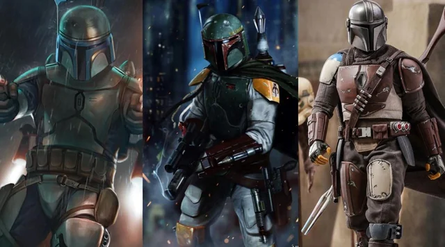

Les Mandaloriens sont un groupe culturel fictif de l'univers Star Wars, reconnus pour leur armure iconique et leur code de conduite rigide. Originaires de la planète Mandalore, ces guerriers sont issus d’une société martiale qui valorise la discipline, le combat et l’honneur. Bien que leur peuple soit initialement constitué d’une seule espèce, les Taungs, ils ont rapidement intégré divers individus et espèces, formant une culture inclusive centrée sur des idéaux communs plutôt que sur une origine raciale. Leur armure, forgée dans le beskar, un métal rare et presque indestructible, symbolise leur identité et leur mode de vie, tout en étant un outil essentiel de survie et de combat.
Leur code, souvent appelé la "Voie du Mandalorien", structure leur existence. Il met en avant des valeurs comme la loyauté envers le clan, le respect des traditions, et la résilience face à l'adversité. Certains Mandaloriens suivent la doctrine avec ferveur, ne retirant jamais leur casque en présence d’autrui, un geste symbolique de leur dévotion. Ces traditions sont transmises de génération en génération, parfois par l’adoption, une pratique courante dans leur société. Ce système a permis aux Mandaloriens de prospérer en dépit des conflits incessants, forgeant une unité malgré la diversité de leurs membres.
Historiquement, les Mandaloriens ont joué un rôle complexe dans la galaxie, oscillant entre conquérants redoutables, mercenaires, et défenseurs de leur peuple. Leur relation avec les Jedi, marquée par des guerres anciennes, a laissé une empreinte durable sur leur histoire, les poussant à développer des armes et des stratégies spécifiques pour contrer les utilisateurs de la Force. Bien que la chute de Mandalore et les guerres civiles aient dispersé leur population, des figures emblématiques comme Bo-Katan Kryze et Din Djarin symbolisent leur survie et leur adaptation. Aujourd'hui, les Mandaloriens continuent de fasciner, représentant une résistance farouche et une quête d'identité dans un univers en perpétuel chaos.
Les Mandaloriens sont organisés en clans, chacun étant dirigé par un chef respecté, souvent un "Alor" ou "Mandalore". Ces clans peuvent être liés par des liens de sang, mais aussi par des alliances politiques ou des serments. Chaque clan a ses propres traditions et coutumes, ce qui permet une certaine diversité au sein de la société mandalorienne, tout en maintenant une unité de principe et de culture.
Le rôle principal des Mandaloriens est celui de guerriers. Élevés pour se battre, ils sont souvent mercenaires ou soldats, mais ils portent également des responsabilités en matière de protection et de survie de leur peuple. Leur compétence au combat est au cœur de leur identité, chaque Mandalorien devant être prêt à défendre ses proches et son clan à tout moment, quel que soit le prix à payer.
Bien que les Mandaloriens soient souvent associés à des figures masculines, les femmes jouent également un rôle fondamental dans leur société. Certaines femmes, comme Bo-Katan, sont des leaders militaires et politiques, tandis que d'autres exercent des rôles de sages, de forgerons, ou de combattantes. L'égalité des sexes est une valeur essentielle dans la culture mandalorienne, avec des femmes et des hommes souvent appelés à occuper des rôles similaires.
En dehors des guerriers, les artisans et forgerons occupent une place de choix parmi les Mandaloriens. Ils sont responsables de la création et de l'entretien des armures mandaloriennes en beskar, un travail minutieux et respecté. Les forgerons, souvent issus des familles les plus anciennes, sont considérés comme des protecteurs de la tradition et de la culture mandalorienne, leur savoir-faire étant transmis de génération en génération.
Dès leur plus jeune âge, les enfants mandaloriens sont formés à la guerre et aux responsabilités de leur clan. L’éducation mandalorienne met l’accent sur la discipline, le respect du code et l’apprentissage des compétences nécessaires pour survivre dans un environnement hostile. Les enfants apprennent aussi l’importance de l’honneur et du devoir envers leur famille et leur peuple, souvent sous la tutelle de parents ou de membres expérimentés du clan.
Les Mandaloriens apparaissent pour la première fois dans Star Wars à travers le personnage de Boba Fett. Bien qu'ils ne soient pas développés en profondeur dans les films, les livres et bandes dessinées des années 90 les présentent comme des guerriers redoutables avec un fort code d'honneur, souvent en guerre contre les Jedi.
Star Wars: The Clone Wars explore davantage leur culture, mettant en scène des factions opposées sur Mandalore, comme les pacifistes et les guerriers. Ces nouvelles dynamiques ont enrichi leur image, transformant les Mandaloriens en un peuple complexe, avec des conflits internes profonds.
Avec The Mandalorian (2019), la saga a redéfini encore une fois les Mandaloriens. La série introduit des personnages comme Din Djarin, un "chasseur de primes" mandalorien, qui incarne un retour aux racines guerrières de la culture mandalorienne tout en explorant des thèmes de famille et de tradition. Le show a approfondi les conflits internes de la communauté mandalorienne, en particulier autour du fameux "Droit de Mandalore", redéfinissant leur place dans la galaxie post-empire.
Les Mandaloriens continuent de se réinventer dans les récits modernes. Leur culture, souvent liée à des luttes pour préserver leurs traditions tout en s’adaptant aux changements galactiques, évolue constamment à travers des séries comme The Mandalorian.